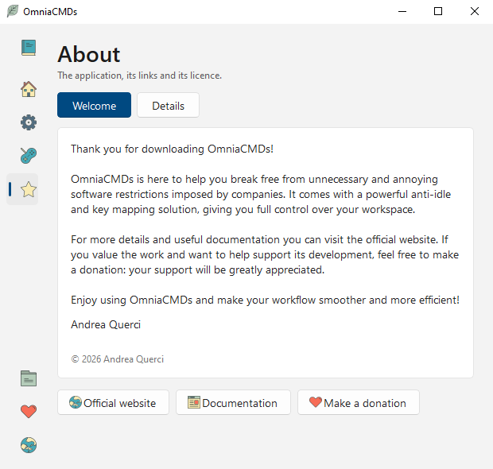

About
Where OmniaCMDs comes from, who made it, and what it is built on.
How it started
OmniaCMDs began during the covid years, as a handful of small tools written for a single purpose each: one kept a session awake, another typed a password, another grabbed a piece of the screen. They were separate programs, each with its own quirks, and they all had to be remembered.
Bringing them together under one roof is a recent idea. For a long time the result was a command line program with a prompt of its own: powerful once you knew the commands, and unfriendly before that.
The app you see now is that same engine with a graphical interface in front of it. Nothing was taken away — the commands are still the heart of it — but you no longer have to memorise anything: every setting has a page, a name and a description, and what used to be a line typed at a prompt is now a row you fill in.

Icons
The icons come from the Responsive Flat Icons collection on SVG Repo, released under the CC0 public domain dedication. CC0 asks for no attribution; this note is here because credit costs nothing and the work deserves it.
- Most of the icons
- taken from the collection as they are
- The close icon
- redrawn from scratch, released under CC0
- The hide icon
- the collection's eye icon with a bar across it, released under CC0
Licence
The app is released under the GNU General Public License v3. The text and the images of this website are released under CC BY 4.0.